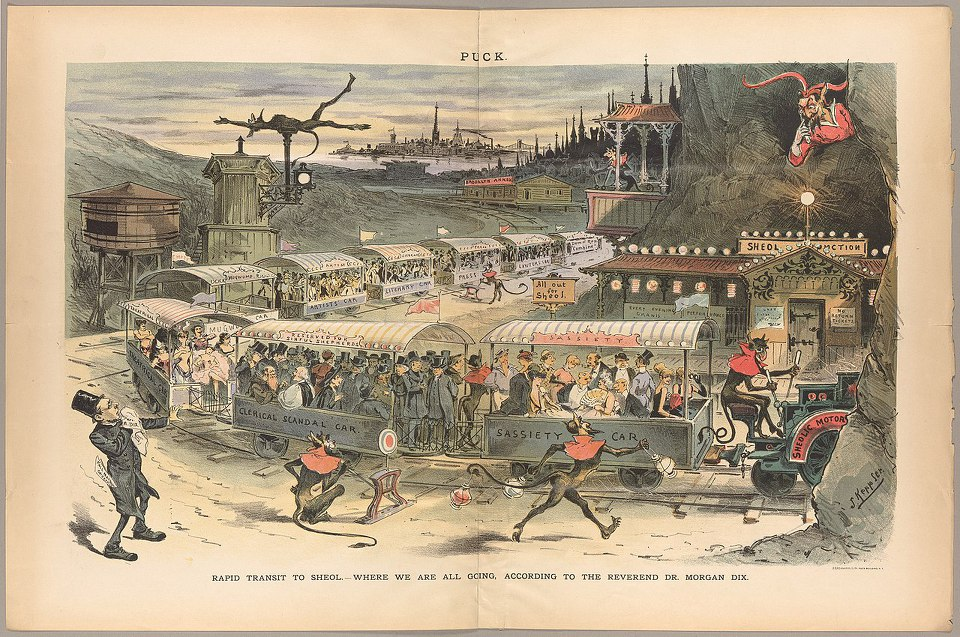
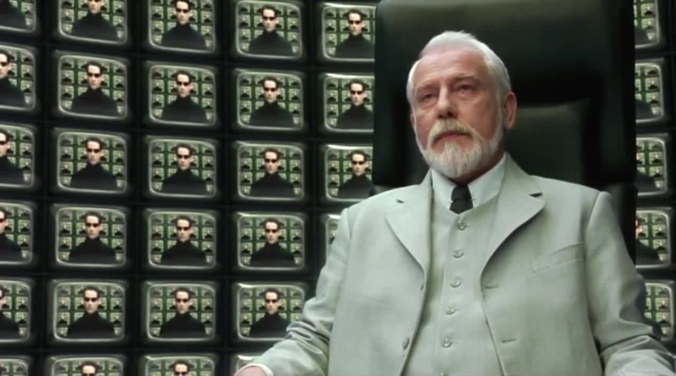

유대교에는 내세가 없다고요 ? - 카페 소사이어티
게시: 2018-09-10T06:30:00+09:00
최근에 카투사 군대 친구 둘과 오랜만에 만나 잡담을 하다가 그만 종교 이야기가 나와버렸습니다. 모인 친구들이 (저 포함해서) 열혈이든 냉담이든 다 기독교 일당인지라 종교 이야기가 금기시되는 분위기는 아니었거든요. 그런데 그 중 열혈에 속하는 친구 하나가 이슬람에 대해 분개하며 이렇게 말했습니다.
"내가 최근에 이슬람에 대해 공부를 좀 했는데, 그건 정말 종교도 아니야. 일단 성전이라고 있는 것이 구약 성경 베낀 것에 불과하고, 또 칼리프다 뭐다 하면서 자기들끼리 얼마나 싸우고 죽이는지..."
그 말을 듣고 저처럼 깐죽거리는 사람이 가만 있을리가 없었지요. "야, 그럼 기독교하고 똑같쟎아 !"
물론 친한 친구들이라서 그냥 웃고 끝내긴 했지만, 실제로 기독교도 이슬람과 동일하게 유대교에서 파생된 종교가 맞습니다. 기독교에서 신성시하는 성전은 구약과 신약인데, 그 중에서 구약은 유대교의 경전 중 일부를 그대로 가져온 것입니다. 하지만 유대교과 기독교는 근본적으로 엄연히 다른 종교이고, 그 차이는 이슬람과 기독교의 차이만큼 큽니다. 그래서 구약에서 말하는 내용과 신약에서 말하는 내용이 약간이 아니라 크게 다른 부분도 맞습니다. 물론 열혈 신자들은 '니가 얼치기로 알아서 그런 것이고 더 깊게 공부하면 다 같은 것을 예언하시는 말씀'이라고들 하지요. 하지만 저같은 냉담 신자가 볼 때, 구약 성서는 선택받은 민족인 유대 민족만을 위한 이야기입니다. 박사모 보수 기독교 단체의 반정부 집회에서 자꾸 이스라엘 국기가 나오는 것도 선택받은 민족인 유대 민족에 대한 좀 빗나간 동경과 더불어 우리 민족을 영적인 면에서 이스라엘 민족으로 거듭나게 해야 한다는 뭐 그런 복잡한 심정이 있기 때문에 그런 것 같습니다. 초기 기독교도 원래는 유대인들만을 위한 종교였으나, 그걸 세계 종교로 발전시킨 것은 바울의 공로이지요. 그래서 (신자 말고) 종교 학자들은 바울을 베드로와는 레벨이 다른, 예수님과 함께 기독교의 공동 창시자로 인정하는 분위기 같습니다.
(이 얼마나 끔찍한 혼종이란 말인가 !)
그 열혈 신자인 친구도 (지금은 믿음으로 다 극복한 상태이지만) 구약과 신약에서 말하는 구원과 복의 개념이 서로 다른 것에 대해 한때 굉장히 고민하고 괴로와했다고 합니다. 신약에서는 주로 '믿음이 깊은 사람은 내세에서 구원받는다'라는 식으로 이야기가 되는 것에 비해, 구약은 '하나님의 말씀을 잘 따르면 기름진 땅을 차지하여 자손이 번창하고 나라가 부강해진다'는 메시지를 계속 던지기 때문입니다.
(영화는 뭐 그냥 그랬습니다. 아주 재미있지는 않았어요.)
몇 년 전에 어디 출장가던 비행기 안에서 영화를 한편 봤는데, 제목이 Cafe Society였습니다. 주연은 제시 아이젠버그와 크리스틴 스튜워트였지요. 대략의 줄거리는 1930년대 뉴욕 출신의 어느 유대인 청년이 헐리웃으로 진출하여 겪는 인생 이야기인데, 주인공의 형은 갱스터입니다. 결국 형이 체포되어 사형을 선고 받고 수감 중인데, 그 가족에게 청천벽력 같은 소식이 하나 더 날아듭니다. 수감 중인 형이 유대교를 버리고 카톨릭으로 개종을 했다는 것입니다 ! 그런데 거기서 나온 대화가 제게는 더 충격적이었습니다.
"알쟎아요, 우리가 지금 이러고 있을 시간은 없어요. 하지만 끝이 보이는 때가 되면, 뭔가 필요하긴 해요."
"그래 ! 넌 죽은 뒤에 유태인으로서 유태인 무덤에 묻히는게 싫으니 ?"
"유대교에서는 내세(afterlife)를 믿지 않쟎아요 ?"
"맞아, 그런 것 같지만 사실 난 니가 하는 말이 더 믿어지지가 않는구나."
(영화 앤트맨에서 악당 옐로우자켓으로 나온 배우 코리 스톨이 카톨릭으로 개종하는 갱스터 형으로 나왔습니다.)
아니 ? 유대교에서는 내세를 안 믿는다고요 ? 그럼 천국과 지옥도 없다고요 ? 그런 황당한 이야기는 처음 듣는 거라서 비행기 안에서 저는 깜짝 놀랐습니다. 그런데 제시 아이젠버그도 그렇지만 그 영화 감독인 우디 알렌도 유태인이거든요. 유대교에 대해서 터무니없는 거짓말을 늘어놓을 사람들은 아닙니다. 인터넷을 뒤져보니, 이스라엘과 중동 뉴스를 다루는 이스라엘 사이트 www.haaretz.com에서는 대략 이렇게 정리해놓았더군요.
1) 유대교에서도 영혼의 존재는 믿습니다. 또 저승도 있습니다. 다만 천국과 지옥으로 나누어져서 상과 벌을 받는 장소가 아니라, She’ol이라고 불리는 깊고 어두운 세계가 존재하는데, 거기서 착한 사람이든 악한 사람이든 그냥 망령으로 떠돌게 됩니다. 그래서 구약 사무엘 상 28장에 나오듯이, 사울이 영매를 불러 저승으로부터 사무엘의 영을 땅 속에서 불러내어 이야기하는 장면도 나오는 것입니다.
| (삼상 28:12) | 여인이 사무엘을 보고 큰 소리로 외치며 사울에게 말하여 이르되 당신이 어찌하여 나를 속이셨나이까 당신이 사울이시니이다 |
| (삼상 28:13) | 왕이 그에게 이르되 두려워하지 말라 네가 무엇을 보았느냐 하니 여인이 사울에게 이르되 내가 영이 땅에서 올라오는 것을 보았나이다 하는지라 |
| (삼상 28:14) | 사울이 그에게 이르되 그의 모양이 어떠하냐 하니 그가 이르되 한 노인이 올라오는데 그가 겉옷을 입었나이다 하더라 사울이 그가 사무엘인 줄 알고 그의 얼굴을 땅에 대고 절하니라 |
| (삼상 28:15) | 사무엘이 사울에게 이르되 네가 어찌하여 나를 불러 올려서 나를 성가시게 하느냐 하니 사울이 대답하되 나는 심히 다급하니이다 블레셋 사람들은 나를 향하여 군대를 일으켰고 하나님은 나를 떠나서 다시는 선지자로도, 꿈으로도 내게 대답하지 아니하시기로 내가 행할 일을 알아보려고 당신을 불러 올렸나이다 하더라 |
2) 하지만 기독교와 근본적으로 다른 점은, 죽은 자들 가운데 선택받은 자들은 최후의 심판의 날에 부활을 하게 된다는 점입니다. 선택받지 못한 자들, 즉 비유대인들이나 악한 이들은 부활하지 못하고 그냥 소멸하는 것입니다. 그래서 유대교도 그렇고 초기 기독교에서도 절대 화장은 하지 않고 언제나 매장을 했습니다. 비록 이집트인들처럼 시신을 미이라로 만들지는 않더라도, 최후의 심판에 날에 부활을 하려면 화장은 좀 이상하니까요. 그래서 올란도 블룸 주연의 십자군 영화 '킹덤 오브 헤븐'에서도, 전염병을 막기 위해 블룸이 전사자들을 화장하려 하자 신부가 '비기독교적인 일'이라며 말리는 장면이 나오는 것입니다.
예루살렘 대주교 : 시신을 화장하면 심판의 날에 부활할 수가 없소.
발리안 (올란도 불름) : 이 시신들을 태우지 않으면 3일 안에 우린 전염병으로 모두 죽습니다. 신께서도 이해하실 겁니다, 주교님. 만약 이해를 못하신다면, 그건 신이 아닙니다. 그러니 걱정할 필요가 없습니다.
(저는 에바 그린이라는 여배우를 저기서 처음 봤는데, 저 영화 찍고나서 얼마 후에 찍은 007 카지노 로열이 저 배우의 리즈 시절이었던 것 같아요.)

(1888년에 실린 '세올로 가는 급행 열차' 삽화입니다.)
유대인들 내에서도 사두개인이다 바리새인이다 해서 내부 종파가 많았지요. 사두개인들은 내세도 부활도 믿지 않은 것에 비해, 바리새인들은 내세와 부활을 믿었다고 합니다. 그러다 로마에 의한 예루살렘 파괴 이후 사두개 일파는 몰락하게 되었지요. 그러나 바리새인들의 믿음도 영원히 그대로 유지된 것은 아니었습니다. 특히 유대인들이 예루살렘에서 쫓겨난 이후, 유대교는 초기 이슬람이나 카톨릭과는 달리 칼리프나 교황 같은 세계적으로 일원화된 종단 본부를 갖지 못하고 세계 각지에서 분산된 랍비들이 나름대로의 신학을 발전시켜 왔습니다. 그래서 시대별로 또 지역별로 이런 믿음에 조금씩 변화가 생기기도 했습니다. 서기 200년 경부터 유대교에도 천국과 지옥의 개념이 나타나기 시작했고, 탈무드에도 사후 세계에 대한 언급이 나오기 시작했습니다. 가령 죄를 지은 영혼은 게헤놈(Gehenom)이라는 불지옥에서 일정 기간 동안 벌을 받은 뒤, 아브라함의 천국으로 인도된다는 식이지요. 또다른 경전에서는 죄지은 영혼이 지옥에서 받는 벌은 일시적이긴 하지만, 벌을 받은 이후 천국으로 인도되는 것이 아니라 그냥 소멸되어버린다는 이야기를 합니다. 또 천국 이야기를 하면서도 최후의 심판 때 부활한다는 이야기도 나옵니다. 뭔가 좀 뒤죽박죽인 셈인데, 중앙집권화된 종단이 없다보니 시대의 흐름에 따라 이런저런 외부 종교와 그리스 철학, 그리고 다양한 랍비들의 믿음이 섞여서 그런 모양입니다.
현재 이스라엘에서 믿는 유대교에서조차도, 천국과 지옥, 부활에 대해 다양한 이론이 있는데, 많은 현대 이스라엘 사람들은 내세라는 개념 자체를 믿지 않게 되었다고 합니다. 가령 세올이라는 구약 성서 오리지널 개념에 대해서는 아무도 믿지 않는다고 하네요. 그래서 카페 소사이어티라는 제가 본 영화에서도 그런 대사가 나왔던 모양입니다.
어차피 사후 세계에 대해서는 살아있는 자들은 아무도 알 수 없는 것이므로, 뭐가 맞고 틀리냐 우리끼리 지지고 볶아봐야 아무 짝에도 쓸모가 없습니다. 그냥 각자의 믿음이 어떤가가 중요할 뿐이지요. 제가 본 저 www.haaretz.com에서는 이 기사 첫부분에 이런 유대인 농담을 적어놓았는데, 어쩌면 이게 농담이 아니라 진리인지도 모르겠습니다.
"천국이나 지옥은 없다. 모든 사람은 죽으면 같은 장소로 가는데, 거기서는 모세와 아키바(Akiva) 랍비가 성서와 탈무드에 대한 설교를 끊임없이 늘어놓는다. 신앙심이 깊은 사람들에게는 거기가 천국이요, 그렇지 않은 자들에게는 그런 지옥이 따로 없을 것이다."
확실한 것은 모든 사람은 죽는다는 것 뿐이지요. 그런 점에서, 저는 우리 말 중 죽었다는 뜻으로 '돌아가셨다'라고 말하는 것이 굉장히 심오한 철학이 녹아있는 표현이라고 생각합니다. 마치 영화 Matrix에서 '아키텍트'가 말하는 'Return to the Source'의 개념 같아서 더욱 그렇습니다. 우리 모두 죽은 뒤에도 각자의 자아와 기억, 지능과 인성을 유지할 수 있을지는 모르겠지만, 에너지와 탄소 등 어떤 형태로든 우리가 온 곳으로 되돌아가는 것은 맞으니까요.

Source : https://www.haaretz.com/amp/jewish/.premium-what-is-the-jewish-afterlife-like-1.5362876
https://en.wikipedia.org/wiki/Caf%C3%A9_Society_(2016_film)
https://www.springfieldspringfield.co.uk/movie_script.php?movie=cafe-society
https://en.wikipedia.org/wiki/Sheol
https://www.imdb.com/title/tt0320661/quotes